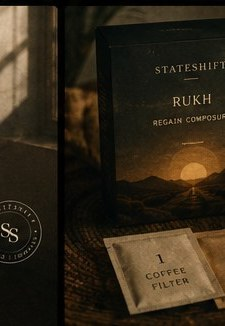

The card in every box
"is it tea? is it coffee?" — a guest, mid-cup

Somewhere in your day there are three minutes nobody is using. This page is about them.
Steam rising. A window. Nowhere you have to be for three minutes. The wait isn't preparation for the experience — it is the experience. The cup just gives your hands something to hold while you arrive.
Everything about how a StateShift cup is made exists to protect those minutes: nothing to grind, nothing to measure, nothing to clean up. Just water, patience, and you.
one cup. one pause. one you.
What should dissolve and what should steep are different things. Kept apart until the water brings them together — a clean cup, nothing gritty, nothing harsh.

Tipped into the empty cup — the body and the sweetness, weighed to the tenth of a gram.
A filter-paper pouch that hangs in the hot water like a slow question. Nothing escapes into your cup except flavour.
"is it tea? is it coffee?" — a guest, mid-cup
Want it stronger? Steep a little longer. Softer? A splash of hot milk after the filter comes out. The pause bends to you.
Milk mutes aroma — many failed cups taught us that. Water lets the top notes arrive as composed.
The steep isn't waiting for the coffee. It's the coffee waiting for you.
There's a person at the other end of every message — usually mid-experiment.
Try the Sampler